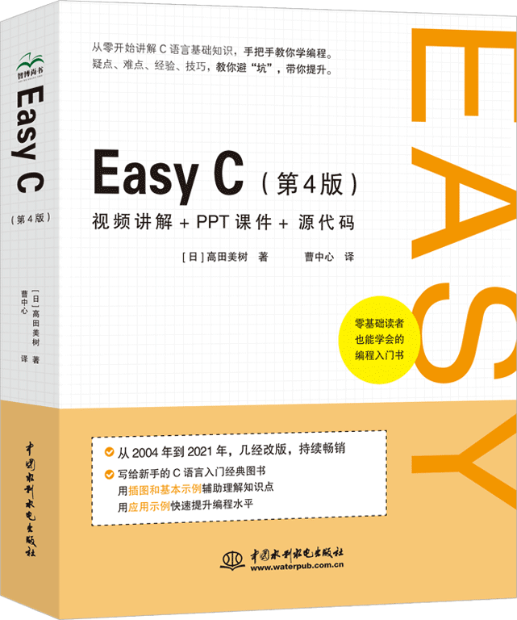

首页 > 书籍下载
《Easy C(第4版)》PDF下载（高清完整版）
|  | 作者：[日]高田美树 |
| 译者：曹中心 | |
| 出版时间：2022年04月01日 | |
| 出版社：中国水利水电出版社 | |
| 书号ISBN：9787522603209 | |
| 总页数：436 |
这是一本专为初学者编写的 C 语言书籍，语言通俗易懂，内容图文并茂，示例丰富。从 2004 年起，这本书经历了 4 次改版，一直都非常畅销。
这里提供的是《Easy C(第4版)》的高清 PDF 下载，内容完整，附带目录标签。
和市面上的其它 C 语言书籍相比，这本书最大的特点就是对新手友好，主要表现在以下几个方面：
- 从编译环境开始讲起，手把手教新手如何运行第一个 C 语言程序，内容循序渐进、由浅入深；
- 书中布置了大量的实例，用实例引入相应的知识点，非常有针对性和实践性；
- 讲解关键知识点时，都插入有直观、清晰的图片加以说明，方便读者理解；
- 对于新手易错、易混淆的知识点，图中都插入有提示性文字，避免读者踩坑；
- 书中代码都有详细的注释，方便读者看懂。
自出版之日起，这本书就赢得了众多读者的好评，比如：
1) 写的很好，适合刚开始学的人。
2) 我真的太爱这本书了，通俗易懂，我这个纯小白都看得懂，真的感谢。
3) 写的挺详细的，C语言入门书。
书籍目录
- 第1章 尝试编程
- 1.1 编程概述
- 1.2 练习环境的准备
- 1.3 编译器测试
- 1.4 编写第一个C语言程序
- 总结
- 第2章 数据计算
- 2.1 数据类型
- 2.2 使用变量
- 2.3 运算
- 2.4 输入数据
- 总结
- 第3章 使用数组
- 3.1 数组概述
- 3.2 使用数组编写程序
- 3.3 使用数组处理字符串
- 总结
- 第4章 尝试控制
- 4.1 控制程序的流程
- 4.2 循环结构1
- 4.3 循环结构2
- 4.4 选择结构
- 4.5 多分支
- 4.6 循环结构和选择结构的组合
- 总结
- 第5章 使用函数
- 5.1 函数概述
- 5.2 函数的定义和调用
- 5.3 传递给函数的参数
- 5.4 函数的返回值
- 5.5 库函数
- 总结
- 第6章 使用指针
- 6.1 指针概述
- 6.2 使用指针变量
- 6.3 指向数组的指针
- 6.4 指针数组
- 6.5 指针作为函数的参数
- 6.6 指针作为函数的返回值
- 总结
- 第7章 用结构体处理数据
- 7.1 使用结构体
- 7.2 使用结构体类型变量
- 7.3 使用结构体类型数组
- 7.4 指定结构体类型作为函数的参数和返回值
- 7.5 使用指向结构体的指针
- 总结
书籍下载
一键登录，免费下载完整版 PDF，文件名称：《Easy C(第4版)》.pdf